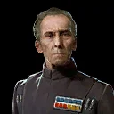
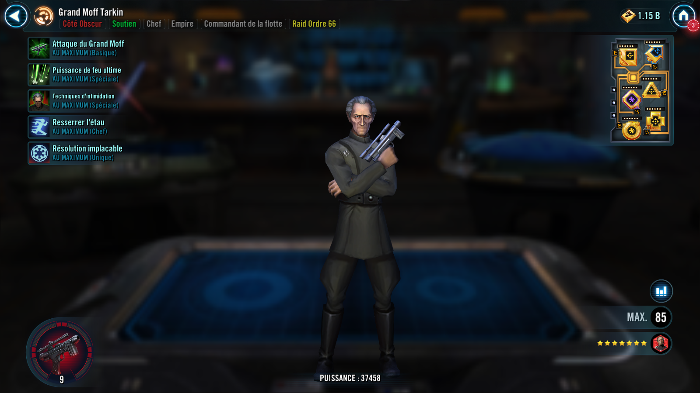
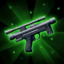
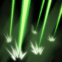
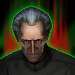
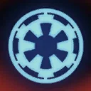

Grand Moff Tarkin
Offensive Empire Support with crushing AoE debuffs

Offensive Empire Support with crushing AoE debuffs


Deal Special damage to target enemy. This attack deals 10% more damage for each active ally, and an additional 10% damage each active Dark Side Clone Trooper ally.
Tarkin gains 100% Potency (stacking) until the next time Ultimate Firepower is used.

Deal Special damage to all enemies and remove 50% of their Turn Meter. This attack deals more damage equal to double Tarkin's Potency percentage.
If all other allies are Dark Side Clone Troopers, deal an additional instance of damage equal to double Tarkin's Potency percentage.

Gain Potency Up for 3 turns. Empire allies gain Tactical Supremacy for 2 turns, which can’t be copied. Inflict Critical Chance Down and Offense Down for 3 turns on all enemies. Rebel enemies can't resist these debuffs. Gain 15% Turn Meter for each debuffed enemy.
Empire allies have +30% Max Health and Max Protection and +30 Speed.
Inflict Defense Down and Expose for 2 turns on enemies that fall below 100% Health during Empire allies' turn, which can’t be resisted.
omicron Boost : While in 3v3 Grand Arenas and if all other allies are Dark Side Clone Troopers: At the start of the encounter, allied Dark Side Clone Trooper Supports Stealth for 2 turns, Dark Side Clone Trooper Tanks gain Protection Up (50%) for 2 turns, which can't be dispelled, and Scorch gains 5 stacks of Bulwark.
Whenever a Dark Side Clone Trooper ally uses a Special ability, Tarkin assists.
Whenever an enemy evades or resists a debuff from a Dark Side Clone Trooper ally, Tarkin gains 5% Turn Meter and recovers 10% Health.
Whenever Intimidation Tactics is used, dispel buffs on all enemies and Daze them for 2 turns.
Whenever Ultimate Firepower is used, inflict Fear on all enemies for 1 turn, which can't be copied, dispelled, or resisted.
Enemies can't be revived.

At the start of battle, Grand Moff Tarkin gains 50% Potency (stacking) for each other Empire ally.
Tarkin gains Defense equal to his Potency and 20% Potency (stacking) for each debuffed enemy.
At the start of each encounter, Tarkin gains Protection Up (50%) for 2 turns.
The first time Tarkin falls below 50% Health, he gains bonus Protection (50%) for 3 turns.
Whenever an Empire ally inflicts a debuff, Tarkin recovers 5% Health and Protection